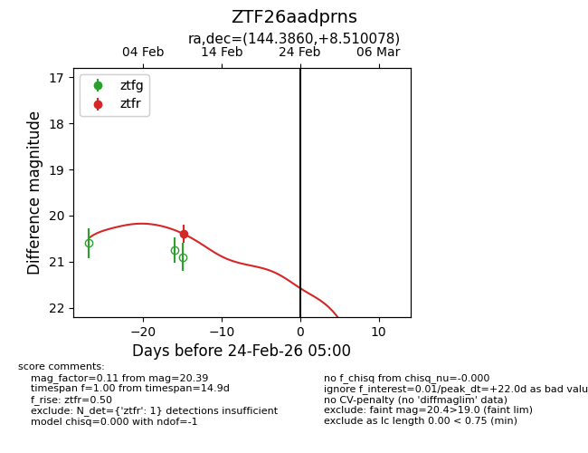
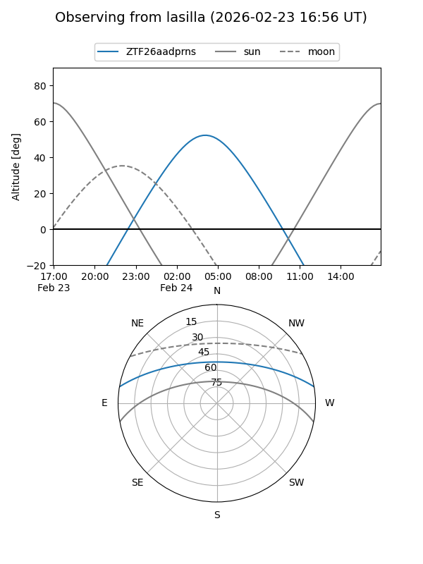
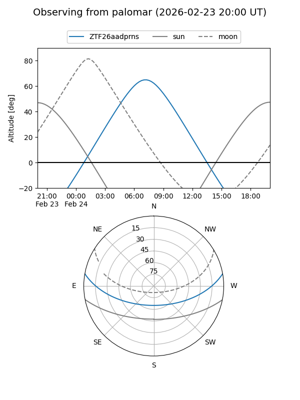

ZTF26aadprns
Target ZTF26aadprns at 2026-02-24 09:08
Aliases and brokers:
FINK: link
Lasair: link
ALeRCE: link
alt names
ZTF26aadprns (ztf,fink_ztf)
Coordinates:
equatorial (ra, dec) = 144.3860,+8.51008
equatorial (HMS+DMS) = 09:37:32.64,+08:30:36.28
galactic (l, b) = (225.6623,+40.61812)
Flags:
Photometry:
last ztfr=20.39
1 ztfr detections
Lightcurve

Visibility


Additional plots